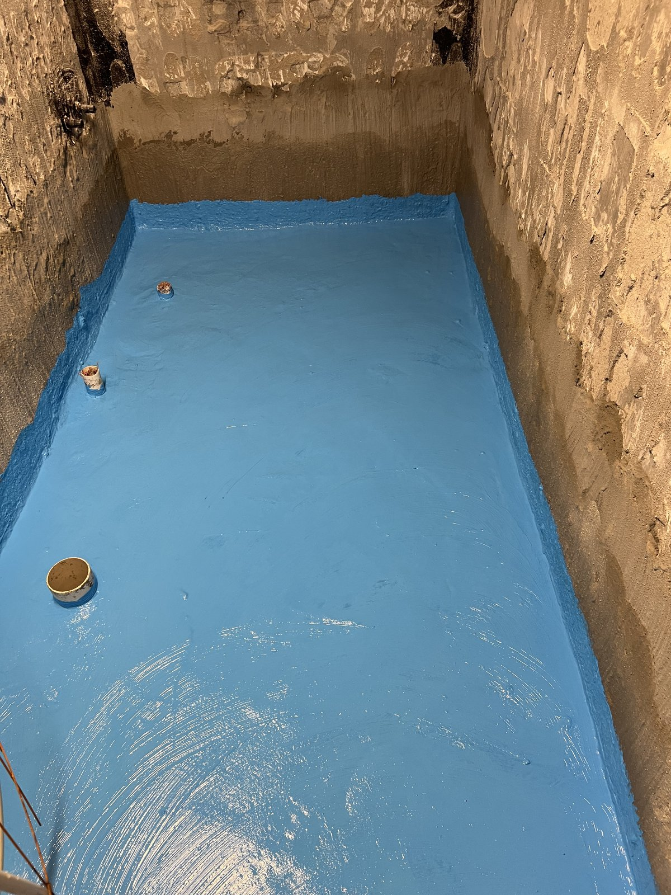
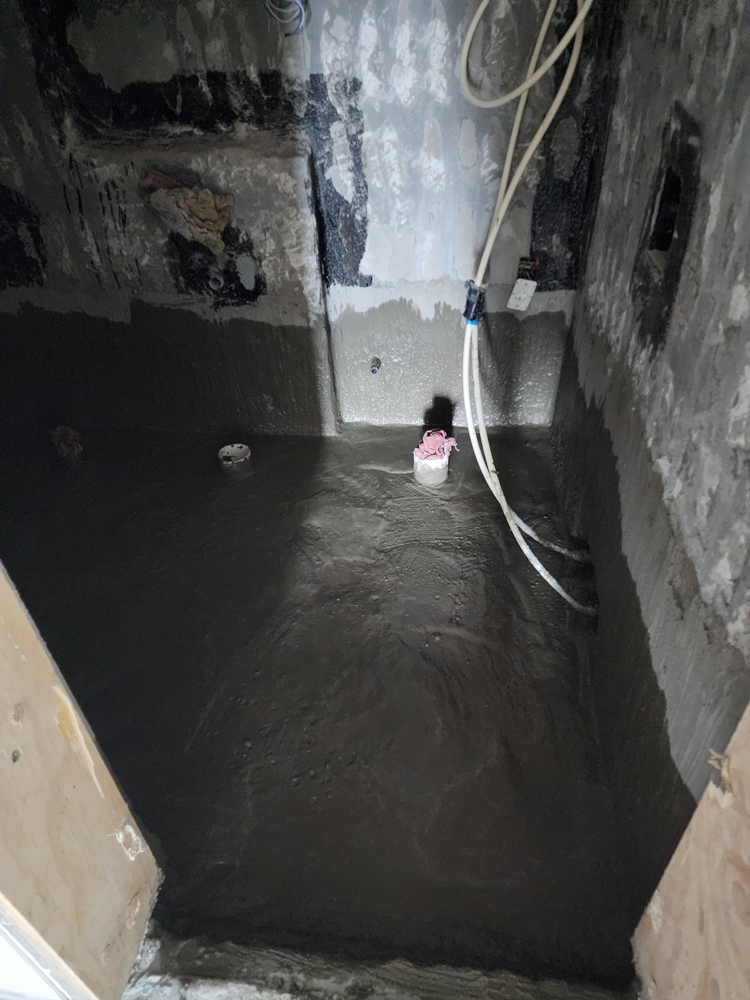
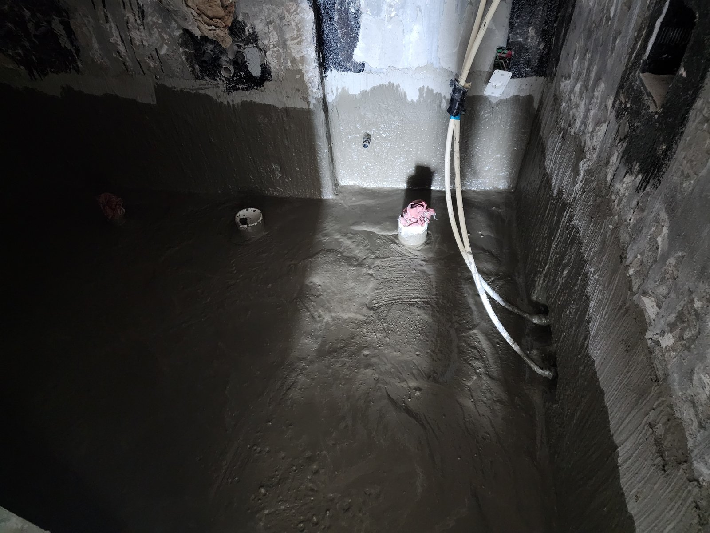
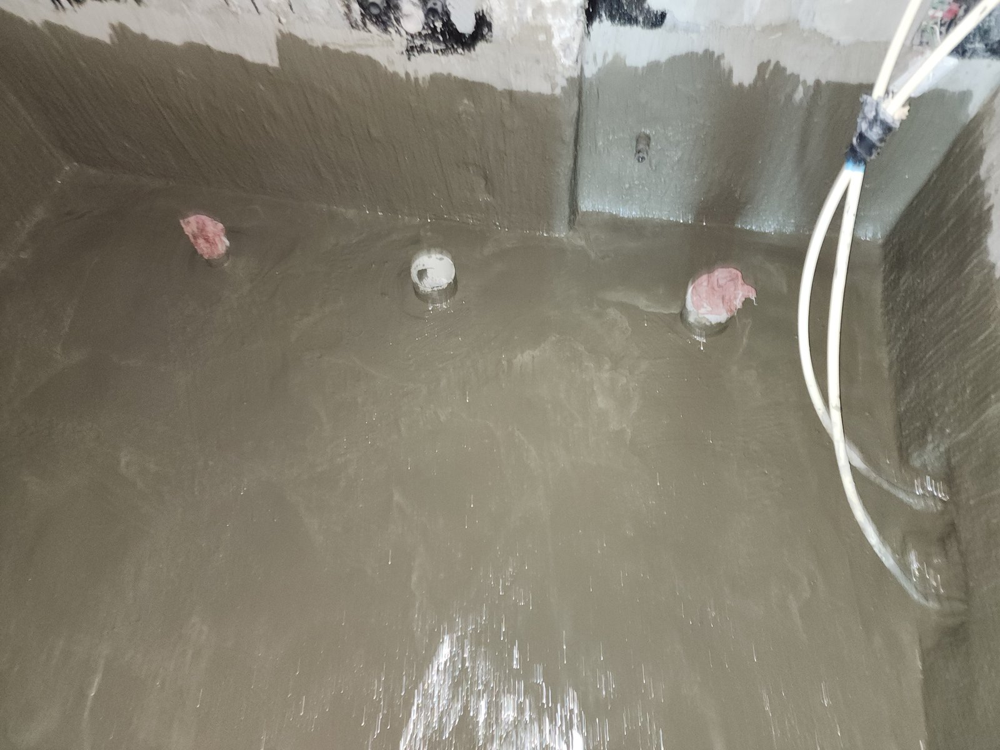
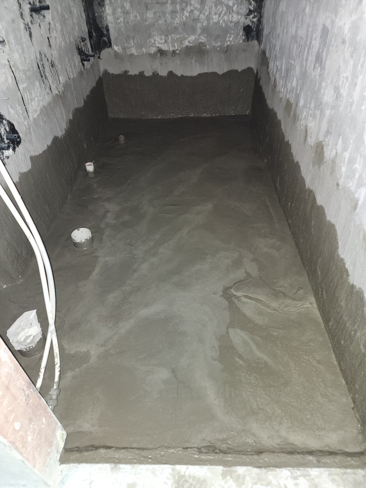
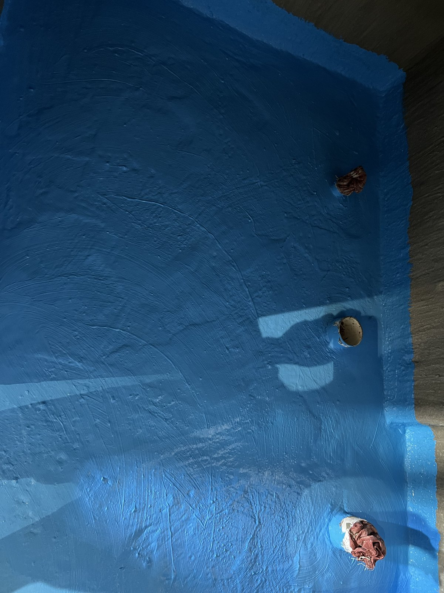
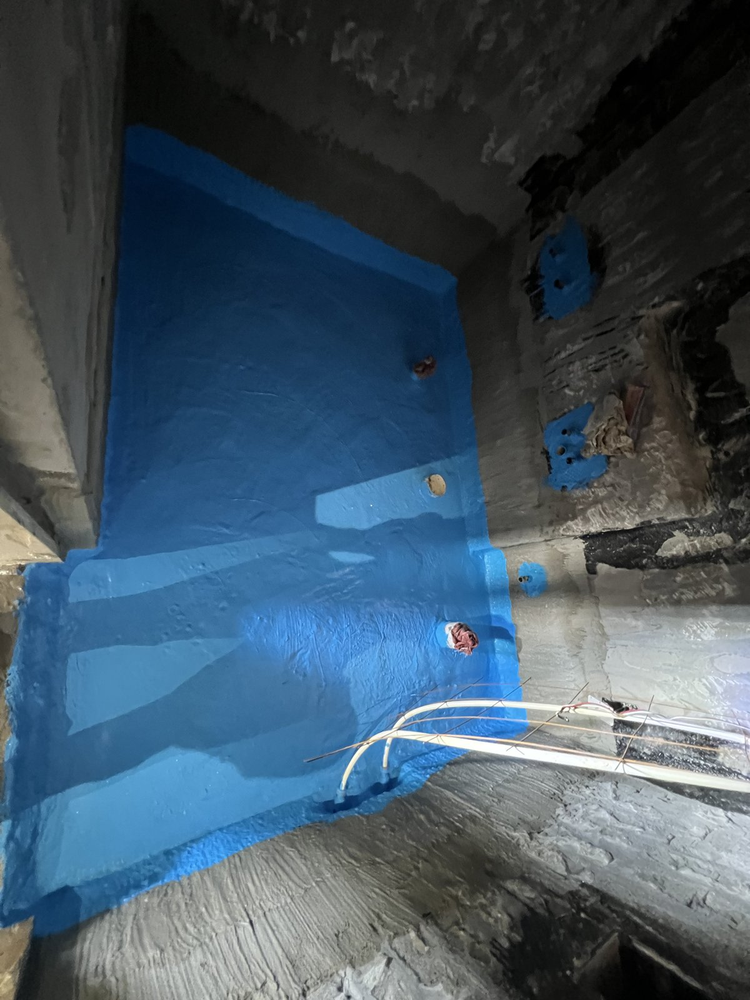
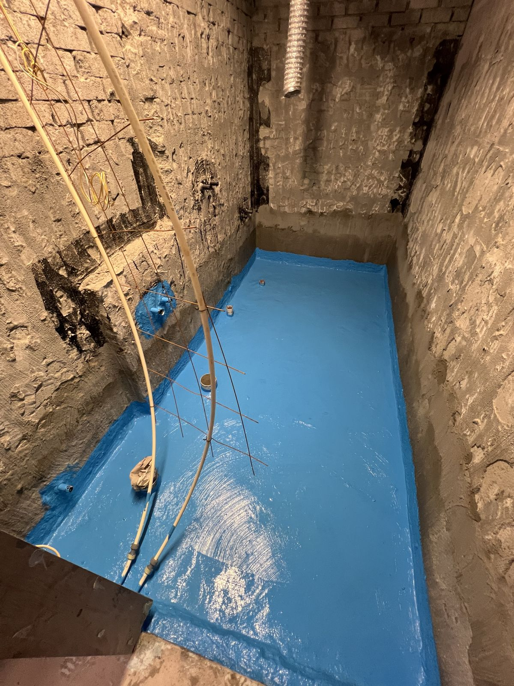

대전 상대동 아이파크시티 욕실 방수｜회색 1차 방수 위에 파란 도막을 입히기까지

현장 작업 한눈에 보기
- 현장
- 대전 상대동 대전아이파크시티 · 세대 욕실
- 문제
- 바탕이 드러난 욕실 바닥과 벽 아래쪽
배수구·벽 배관 구멍 둘레 - 작업
- 회색 1차 방수층 위 파란 도막 방수
배수구 자리 막음·벽 배관 구멍 둘레 덧바름 - 결과
- 8월 30일 도막 방수까지 사진 확인
담수시험·타일 마감은 미기재
대전 유성구 상대동 대전아이파크시티 세대의 욕실 방수 기록입니다. 바닥과 벽 아래쪽에 회색 1차 방수층을 바르고 배수구 자리를 막아 둔 상태에서, 그 위에 파란색 도막 방수를 입히기까지 8월 29·30일 사진 8장으로 소개합니다.
1. 1차 방수층을 바른 욕실
대전 유성구 상대동 대전아이파크시티 세대의 욕실 방수 현장입니다. 2026년 8월 29일과 30일에 남긴 사진을 순서대로 소개합니다.
8월 29일 사진에는 욕실 바닥 전체와 벽 아래쪽이 회색 1차 방수층으로 덮여 있습니다. 벽 위쪽은 바탕면이 드러난 상태입니다.

2. 바닥에서 벽 아래쪽까지 이어 바름
가로로 찍은 사진에서는 1차 방수층이 바닥과 벽이 만나는 모서리를 지나 벽 아래쪽까지 끊기지 않고 이어진 것이 보입니다. 모서리는 바닥과 벽의 방수층이 만나는 자리라 따로 챙겨 바릅니다.

3. 배수구 자리는 막아 두기
바닥의 배수구와 배관 자리는 천과 마개로 막아 두었습니다. 방수재가 관 안으로 흘러 들어가지 않게 하려는 것으로, 둘레의 방수층은 관 바로 옆까지 발라 두었습니다.

4. 길게 이어진 바닥 구간
길게 이어진 바닥 구간도 같은 회색 1차 방수층으로 덮여 있고, 벽 아래쪽에도 띠처럼 발려 있습니다. 바닥 가장자리를 따라 배수구 자리가 보입니다.

5. 이튿날, 파란색 도막 방수
8월 30일에는 1차 방수층 위에 파란색 도막을 입혔습니다. 위에서 내려다본 사진으로, 막아 둔 배수구 자리 둘레까지 도막이 덮여 있습니다.

6. 벽의 배관 구멍 둘레까지
바닥과 벽 아래쪽뿐 아니라 벽에 난 배관 구멍 둘레에도 파란 도막을 덧발랐습니다. 배관이 벽을 지나는 자리는 바닥과 따로 한 번 더 챙기는 곳입니다.

7. 벽과 만나는 가장자리까지
길게 이어진 바닥 구간도 파란 도막으로 덮었습니다. 바닥 가장자리에서는 도막을 벽 쪽으로 조금 올려 발라 모서리를 감쌌습니다.
8. 도막 방수를 마친 모습
다른 각도에서 본 모습입니다. 바닥 전체와 벽의 배관 구멍 둘레까지 파란 도막이 덮여 있습니다. 이날 도막 방수까지 마쳤습니다.

9. 확인한 범위와 상담 안내
이번 기록은 회색 1차 방수층을 바른 상태에서 파란색 도막 방수를 입히기까지입니다. 담수시험 결과와 그 뒤의 타일 마감, 사용한 자재 이름은 이 글에 적지 않았습니다.
욕실 방수를 상담하실 때는 욕실 전체와 바닥 배수구 둘레, 벽과 바닥이 만나는 모서리를 각각 찍어 보내 주세요. 아랫집 천장에 물자국이 있다면 그 사진도 함께 보내 주시면 범위를 잡는 데 도움이 됩니다.